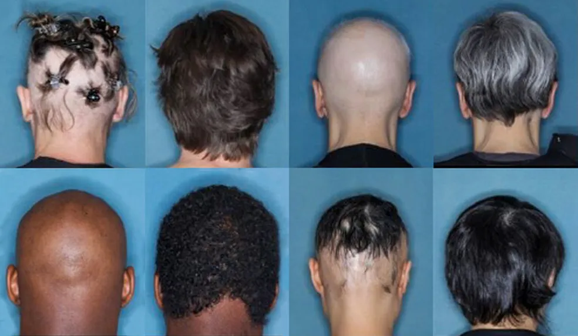
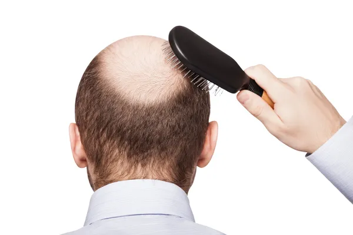
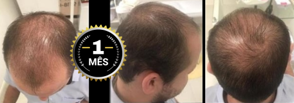
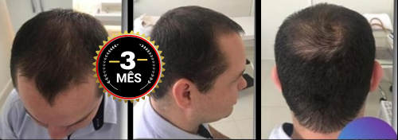
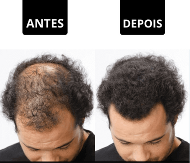
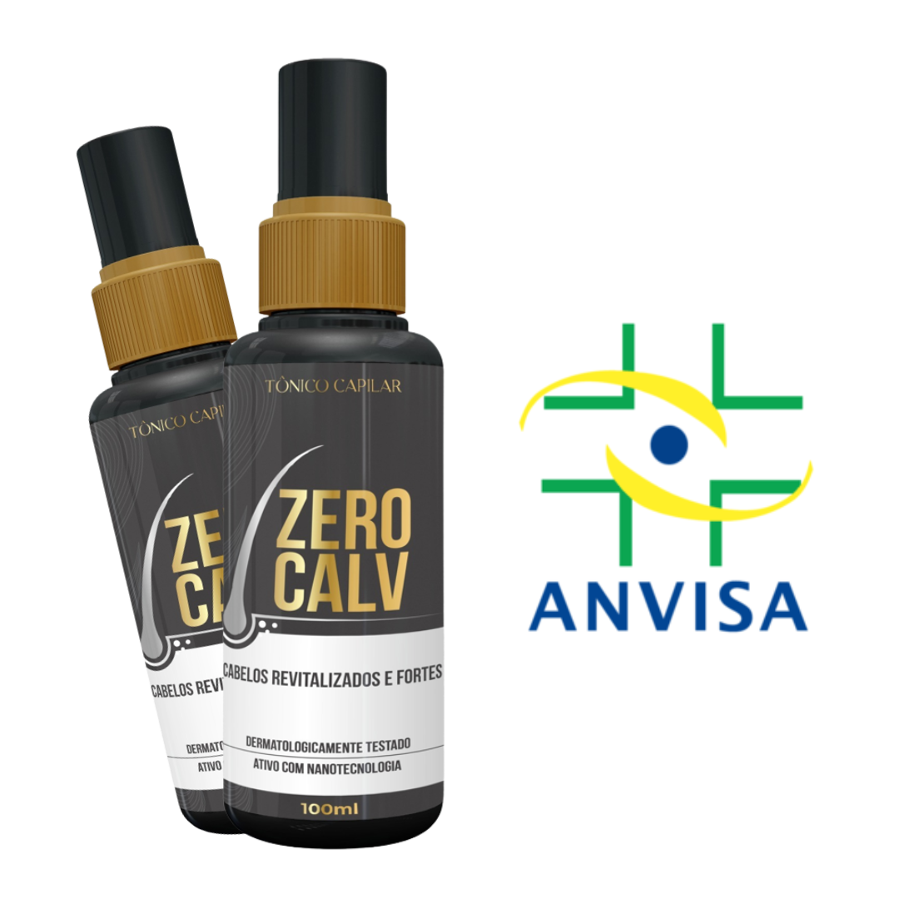

CIÊNCIA E SAÚDE

Depois de anos sofrendo com entradas aumentando e fios caindo todos os dias, milhares de homens estão finalmente encontrando alívio com uma fórmula nacional desenvolvida para reativar os folículos capilares e bloquear a queda na raiz do problema.
Resultados como estes começaram a circular em grupos e redes sociais, chamando a atenção de especialistas…
A calvície sempre foi tratada como algo “inevitável”, mas estudos recentes realizados por especialistas brasileiros mostram que é possível reativar folículos que ainda não morreram — e interromper a queda já nas primeiras semanas.
Em testes independentes, homens entre 21 e 49 anos tiveram melhora visível em volume, redução de queda no banho e aumento da densidade dos fios após a aplicação de um composto natural que age diretamente na raiz do problema.
Para quem sofre com entradas profundas, falhas no topo da cabeça, queda excessiva ou afinamento dos fios, os resultados chamaram a atenção até de dermatologistas especializados em queda capilar.
Depois de entender o que realmente causa a queda, especialistas passaram a buscar soluções que agissem exatamente na origem do problema — no enfraquecimento do folículo capilar.
O ZeroCalv® combina ativos que aumentam a circulação sanguínea no couro cabeludo, nutrem o folículo que ainda não morreu e reduzem a ação da DHT — o hormônio responsável por miniaturizar os fios e causar calvície.
Com isso, o ambiente que antes fazia o fio cair passa a ser favorável ao crescimento, devolvendo densidade, preenchendo falhas e aumentando o volume semana após semana.
Sem enrolação. Sem procedimentos caros. Sem idas ao médicas. 100% natural.
O ZeroCalv® se destaca por suas propriedades anti-inflamatórias fundamentais para o rejuvenescimento capilar. Em conjunto, esses benefícios não apenas combatem o estresse que afeta os cabelos, mas também A simplicidade é essencial: nenhum procedimento invasivo, nenhuma consulta médica necessária. ZeroCalv® é a resposta, 100% natural.
Em um cenário em que milhares de homens se debatem com a calvície, o ZeroCalv® surge como um divisor de águas. Esqueça as perucas temporárias e os implantes caros e muitas vezes insatisfatórios. A fórmula revolucionária do ZeroCalv® está aqui para extinguir as soluções superficiais e se estabelecer como a solução definitiva para esse dilema.
O Que Parecia Inatingível, Agora é Realidade: O líquido que revoluciona a experiência de cuidados capilares é realidade. O ZeroCalv® é uma combinação excepcional de ativos 100% naturais, apresentando-se em duas fórmulas exclusivas. Sua ação não impacta o nosso metabolismo e não apresenta quaisquer contraindicações. A resposta que você esperava agora está ao seu alcance.
“Durante muito tempo, a calvície foi minha sombra. Minha autoestima desabou junto com meus fios. Evitava socializar por vergonha. Quando ouvi falar do ZeroCalv®, eu achei que era boato, no começo. Contudo, decidi tentar. Em questão de dias, o impacto foi notável. A queda diminuiu, novos cabelos surgiram. A minha vida mudou completamente e isso foi sem médicos ou incômodos.”
André Rodrigues , 53 anos – Servidor Público
André não está sozinho. O ZeroCalv® reescreveu histórias de vários homens atingidos pela calvície. Em poucas semanas, a transformação foi alcançada de maneira simples, segura e eficaz. Cabelos perdidos foram recuperados, e junto com isso a confiança foi restaurada.
"Após anos vendo meu cabelo desaparecer, encontrar uma solução para a calvície me deixou emocionado. O tratamento ágil do ZeroCalv® não apenas revitalizou meus fios, mas elevou minha autoestima e confiança. Até mesmo nas interações com as mulheres, Sinto-me rejuvenescido, como se o tempo tivesse voltado aos meus 18 anos novamente."
Pedro Oliveira, 32 anos - Advogado
 Pedro Oliveira, 32 anos de São Paulo (SP), depois de 3 meses de tratamento. (Foto: Facebook)  Pedro Oliveira, 32 anos de São Paulo (SP), depois de 3 meses de tratamento. (Foto: Facebook)Talvez pareça uma trama saída diretamente de uma tela de cinema ou até mesmo de um enredo de novela das oito. Mas quando você ouve essa história diretamente dos lábios da pessoa que a protagonizou, é inevitável sentir-se surpreso e pensar: "Como isso foi realmente possível?". E é justamente essa sensação que irá te envolver ao conhecer a jornada de Pedro, 32 anos, através do ZeroCalv®.
Desde que era mais novo, Pedro começou a notar os primeiros sinais de queda capilar. Aos 26 anos, as consequências desse problema já eram visíveis. O ápice do desafio surgiu quando seu relacionamento chegou ao fim, com a parceira deixando-o devido à sua perda de cabelo. No entanto, após começar a utilizar o ZeroCalv®, em questão de semana, Pedro se deparou com uma surpresa transformadora ao se olhar no espelho.
O Início da Mudança
O Tônico ZeroCalv® cruzou o caminho de Pedro através da internet. Após compartilhar suas preocupações com alguns amigos, um deles revelou que tinha conhecimento sobre o produto. Esse amigo relatou que seu próprio primo havia experimentado o ZeroCalv® e, para a alegria de Pedro, o resultado havia sido bastante satisfatório. Motivado e decidido, Pedro decidiu buscar o produto por conta própria.
E Cada mudança na vida de Pedro foi como uma peças de um quebra-cabeça, encaixando-se perfeitamente e transformando a imagem que ele via no espelho e nas relações pessoais. Com ZeroCalv®, ele experimentou um capítulo que superou todas as expectativas, proporcionando-lhe uma autoestima renovada e uma confiança que há muito tempo estava adormecida.
Primeiro mês com ZeroCalv®
O desfecho do primeiro mês de uso revelou-se decisivo. Caso os resultados não tivessem sido alcançados de forma rápida e notável, é possível que eu tivesse interrompido o tratamento e não estaria compartilhando essa experiência com todos vocês hoje.
No entanto, em um prazo de apenas 10 dias, já pude observar uma mudança notável, um progresso evidente. A vitalidade dos fios capilares havia aumentado significativamente, apresentando um volume e força aprimorados. Era como se fosse possível intuir que aqueles fios, agora fortalecidos, haviam alcançado uma estabilidade que os protegeria contra quedas futuras.
Segundo mês com ZeroCalv®
No desenrolar do segundo mês, uma notável mudança começou a chamar a atenção das pessoas ao meu redor, gerando conversas e comentários animados. Foi realmente intrigante observar as expressões das pessoas quando perceberam que aquele indivíduo que costumava ser "o careca da turma" estava, na verdade, reganhando seus cabelos.
O segundo mês foi marcado por um processo de crescimento capilar substancial. Se nos primeiros 10 dias de uso do ZeroCalv® já havia se tornado evidente que a queda capilar estava sob controle, o período de 40 dias demonstrou sua incrível capacidade de estimular o crescimento de novos fios.
Essa transformação era algo que não se podia ignorar. A diferença era visível e impactante, representando não apenas um avanço pessoal, mas também uma nova perspectiva sobre a minha própria aparência e auto-estima.
Terceiro mês com ZeroCalv®
Agora, ao completar três meses, minha admiração pelo tratamento com ZeroCalv® é absoluta.
Uma das maravilhas desse processo reside na sua simplicidade: a aplicação. E o melhor de tudo é que essa etapa não interferiu em absolutamente nenhum aspecto da minha rotina diária; não houve interrupções ou impedimentos.
A recomendação entusiasmada do ZeroCalv® é direcionada a todos, mas especialmente àqueles que estão no estágio inicial de perda capilar. Esta é a janela de oportunidade! Optar por ZeroCalv® agora pode resultar em avanços ainda mais rápidos e perceptíveis. Esta recomendação é feita de coração para todos aqueles que podem estar enfrentando o mesmo desafio que eu enfrentei.
Recomendo ZeroCalv® a todos. Especialmente aqueles que estão começando a perder o cabelo. Essa é a hora! Por que aí o resultado deve ser mais rápido ainda. Recomendo ZeroCalv® a todos. Especialmente aqueles que estão começando a perder o cabelo. Essa é a hora! Por que aí o resultado deve ser mais rápido ainda.
E assim encerro meu depoimento... Os resultados estão à vista, registrados nas imagens. obrigado por me escutar ate aqui.
Geralmente, não Recomendamos produtos em nosso site ou revista, mas devido à clara evidência de sua eficácia e à satisfação assegurada, sentimos que compartilhar essa dica seria uma contribuição valiosa para nossos leitores.
"Além disso, a empresa que comercializa o ZeroCalv® no Brasil demonstra uma confiança inabalável em sua qualidade, ao ponto de oferecer uma garantia completa de satisfação. Caso algum cliente não esteja plenamente satisfeito, basta entrar em contato com a empresa para resolver a situação. Isso reflete o compromisso que a empresa tem com seus clientes."
Importante: Segundo o fabricante, O ZeroCalv® só está disponível para compra através da internet, e não sendo comercializado em estabelecimentos farmácias ou lojas específicas.De acordo com a empresa, a imensa demanda pelo produto está tão alta, que o estoque limitado, que eles têm é vendido em poucas horas através do site oficial.
 DERMATOLOGÍSTA Rodrigo Frota. (Foto: Anti Age Magazine)
DERMATOLOGÍSTA Rodrigo Frota. (Foto: Anti Age Magazine)
O custo associado ao Tratamento ZeroCalv® é flexível, adaptando-se à quantidade de frascos selecionada para aquisição. O fabricante segue uma política de descontos escalonados, o que significa que o valor final diminui proporcionalmente conforme a quantidade de frascos escolhida.
Tanto no Brasil quanto nos Estados Unidos, em conformidade com a situação pandêmica, o ZeroCalv® adotará exclusivamente o método de vendas online. Os clientes terão a conveniência de efetuar suas compras por meio do site oficial e receber os produtos no conforto de suas residências.É crucial estar atento: a marca ZeroCalv® não realiza vendas através de plataformas como Mercado Livre, OLX ou outras semelhantes. Para garantir a aquisição do produto ORIGINAL, é imprescindível sempre optar pela compra no Site Oficial.
Durante a produção dessa reportagem, recebemos um contato direto do fabricante que generosamente apresentou uma Oferta Exclusiva. E Nossa equipe recebeu a oportunidade de compartilhar com nossos leitores um Desconto Especial, juntamente com a opção de parcelamento em até 12x no cartão de crédito, para aqueles que desejarem explorar os benefícios do ZeroCalv®.
Atenção: O desconto é válido apenas enquanto durarem os estoques, e é aplicado automaticamente ao clicar na imagem abaixo.
Válida até hoje:
EXPERIMENTE ZEROCALV® EM 12X COM ATÉ 70% DE DESCONTO!
 Conheça o tônico Analisado nos Testes